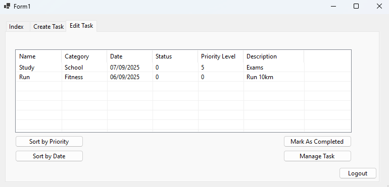
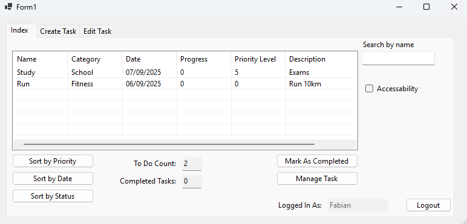
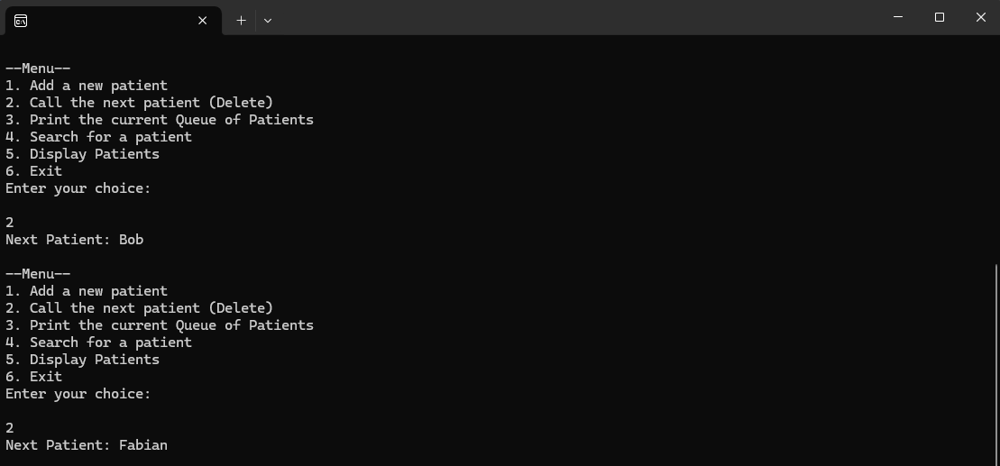

Portfolio Category
Coding Projects
A focused look at problem-solving projects built with C#, WinForms, and C++ system logic.
To Do App
Overview
A WinForms task management app built with a duo partner where users can create accounts, log in, and manage tasks in a simple daily workflow.
Technologies Used
- WinForms C#
Features
- User account creation and login
- Add, edit, and remove tasks
- Export tasks for backup or sharing
- Dynamic task updates
Project Glimpse




What I Learned
Improved my C# WinForms skills, implemented authentication and task flows, and gained experience collaborating effectively on a duo project.
Patient Management System
Overview
A C++ console application for Accident & Emergency triage where patient priority determines service order via a heap-based queue.
Technologies Used
- C++
- Priority Queue and Heap
- Object-Oriented Programming
Features
- Add patients with priority levels from 1-5
- Automatically queue by severity
- Call and remove next patient
- Search for patients by name
- Display queue status with priorities
Project Glimpse





What I Learned
I strengthened my understanding of heaps and queue behavior, practiced object-oriented C++ design, and improved validation and dynamic update handling.